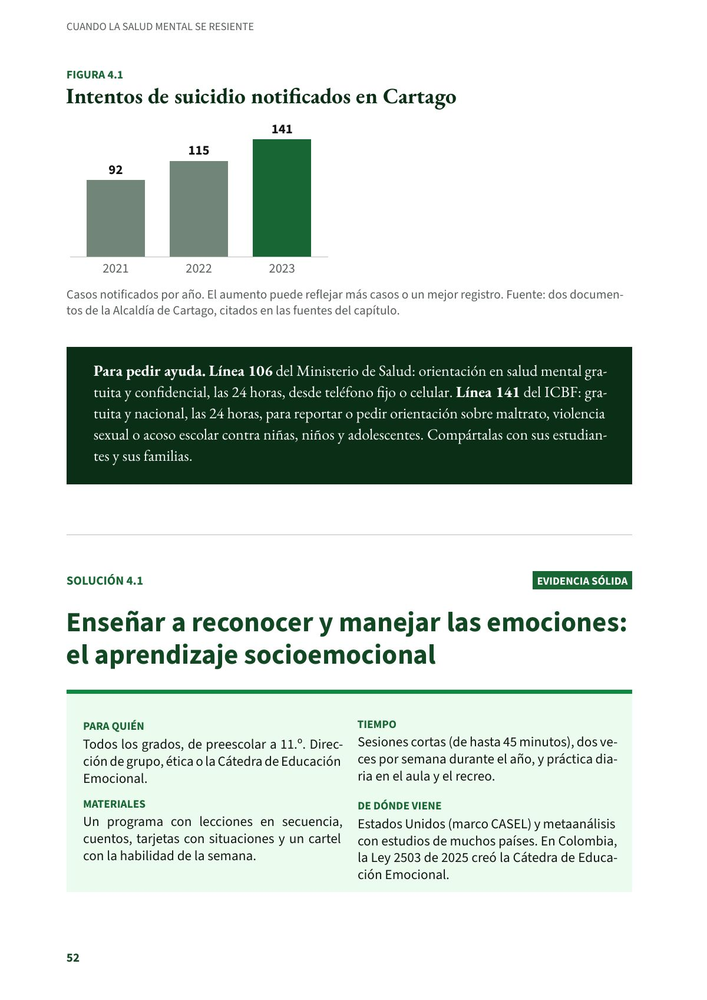
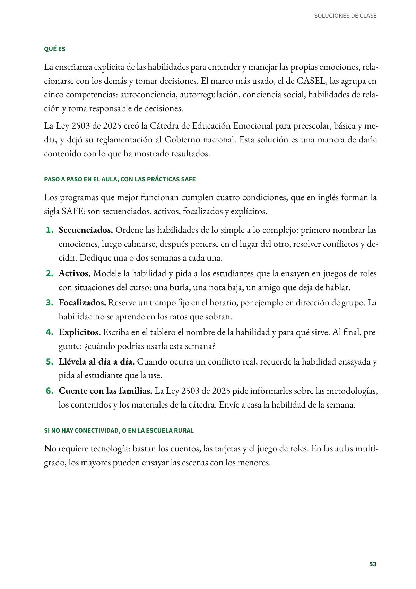
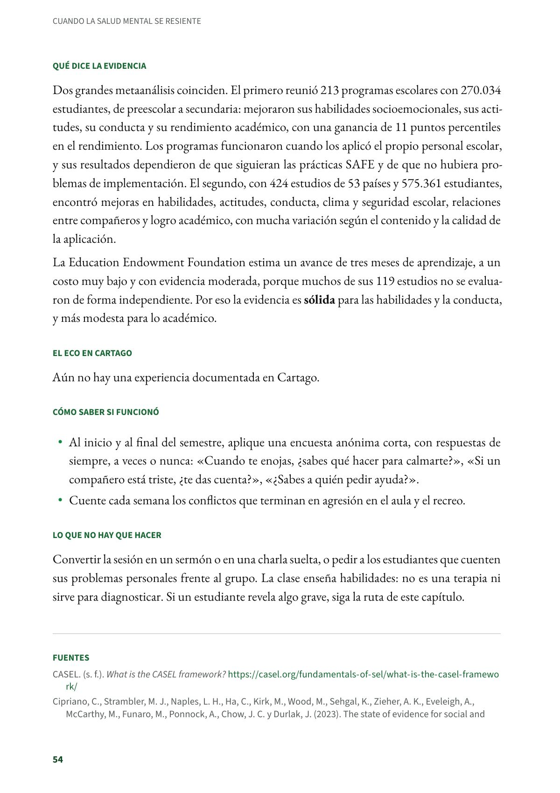
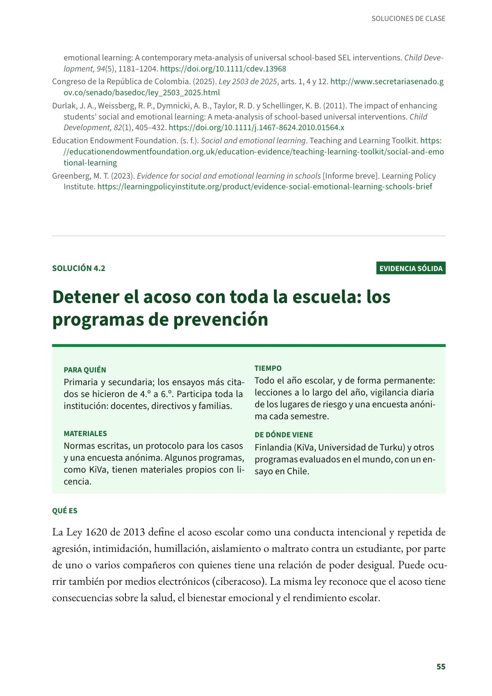

Enseñar a reconocer y manejar las emociones: el aprendizaje socioemocional
La enseñanza explícita de las habilidades para entender y manejar las propias emociones, relacionarse con los demás y tomar decisiones. Todos los grados, de preescolar a 11.º. Evidencia sólida.
PDF · 4 págs. · 80 KBEn resumen
- Evidencia: sólida.
- Para quién: Todos los grados, de preescolar a 11.º. Dirección de grupo, ética o la Cátedra de Educación Emocional.
- Tiempo: Sesiones cortas (de hasta 45 minutos), dos veces por semana durante el año, y práctica diaria en el aula y el recreo.
- Materiales: Un programa con lecciones en secuencia, cuentos, tarjetas con situaciones y un cartel con la habilidad de la semana.
- De dónde viene: Estados Unidos (marco CASEL) y metaanálisis con estudios de muchos países. En Colombia, la Ley 2503 de 2025 creó la Cátedra de Educación Emocional.
Qué es
La enseñanza explícita de las habilidades para entender y manejar las propias emociones, relacionarse con los demás y tomar decisiones. El marco más usado, el de CASEL, las agrupa en cinco competencias: autoconciencia, autorregulación, conciencia social, habilidades de relación y toma responsable de decisiones.
La Ley 2503 de 2025 creó la Cátedra de Educación Emocional para preescolar, básica y media, y dejó su reglamentación al Gobierno nacional. Esta solución es una manera de darle contenido con lo que ha mostrado resultados.
Paso a paso en el aula, con las prácticas SAFE
Los programas que mejor funcionan cumplen cuatro condiciones, que en inglés forman la sigla SAFE: son secuenciados, activos, focalizados y explícitos.
- Secuenciados. Ordene las habilidades de lo simple a lo complejo: primero nombrar las emociones, luego calmarse, después ponerse en el lugar del otro, resolver conflictos y decidir. Dedique una o dos semanas a cada una.
- Activos. Modele la habilidad y pida a los estudiantes que la ensayen en juegos de roles con situaciones del curso: una burla, una nota baja, un amigo que deja de hablar.
- Focalizados. Reserve un tiempo fijo en el horario, por ejemplo en dirección de grupo. La habilidad no se aprende en los ratos que sobran.
- Explícitos. Escriba en el tablero el nombre de la habilidad y para qué sirve. Al final, pregunte: ¿cuándo podrías usarla esta semana?
- Llévela al día a día. Cuando ocurra un conflicto real, recuerde la habilidad ensayada y pida al estudiante que la use.
- Cuente con las familias. La Ley 2503 de 2025 pide informarles sobre las metodologías, los contenidos y los materiales de la cátedra. Envíe a casa la habilidad de la semana.
Si no hay conectividad, o en la escuela rural
No requiere tecnología: bastan los cuentos, las tarjetas y el juego de roles. En las aulas multigrado, los mayores pueden ensayar las escenas con los menores.
Qué dice la evidencia
Dos grandes metaanálisis coinciden. El primero reunió 213 programas escolares con 270.034 estudiantes, de preescolar a secundaria: mejoraron sus habilidades socioemocionales, sus actitudes, su conducta y su rendimiento académico, con una ganancia de 11 puntos percentiles en el rendimiento. Los programas funcionaron cuando los aplicó el propio personal escolar, y sus resultados dependieron de que siguieran las prácticas SAFE y de que no hubiera problemas de implementación. El segundo, con 424 estudios de 53 países y 575.361 estudiantes, encontró mejoras en habilidades, actitudes, conducta, clima y seguridad escolar, relaciones entre compañeros y logro académico, con mucha variación según el contenido y la calidad de la aplicación.
La Education Endowment Foundation estima un avance de tres meses de aprendizaje, a un costo muy bajo y con evidencia moderada, porque muchos de sus 119 estudios no se evaluaron de forma independiente. Por eso la evidencia es sólida para las habilidades y la conducta, y más modesta para lo académico.
El eco en Cartago
Aún no hay una experiencia documentada en Cartago.
Cómo saber si funcionó
- Al inicio y al final del semestre, aplique una encuesta anónima corta, con respuestas de siempre, a veces o nunca: «Cuando te enojas, ¿sabes qué hacer para calmarte?», «Si un compañero está triste, ¿te das cuenta?», «¿Sabes a quién pedir ayuda?».
- Cuente cada semana los conflictos que terminan en agresión en el aula y el recreo.
Lo que no hay que hacer
Convertir la sesión en un sermón o en una charla suelta, o pedir a los estudiantes que cuenten sus problemas personales frente al grupo. La clase enseña habilidades: no es una terapia ni sirve para diagnosticar. Si un estudiante revela algo grave, siga la ruta de este capítulo.
Fuentes
CASEL. (s. f.). What is the CASEL framework? casel.org
Cipriano, C., Strambler, M. J., Naples, L. H., Ha, C., Kirk, M., Wood, M., Sehgal, K., Zieher, A. K., Eveleigh, A., McCarthy, M., Funaro, M., Ponnock, A., Chow, J. C. y Durlak, J. (2023). The state of evidence for social and emotional learning: A contemporary meta-analysis of universal school-based SEL interventions. Child Development, 94(5), 1181–1204. doi.org
Congreso de la República de Colombia. (2025). Ley 2503 de 2025, arts. 1, 4 y 12. secretariasenado.gov.co
Durlak, J. A., Weissberg, R. P., Dymnicki, A. B., Taylor, R. D. y Schellinger, K. B. (2011). The impact of enhancing students' social and emotional learning: A meta-analysis of school-based universal interventions. Child Development, 82(1), 405–432. doi.org
Education Endowment Foundation. (s. f.). Social and emotional learning. Teaching and Learning Toolkit. educationendowmentfoundation.org.uk
Greenberg, M. T. (2023). Evidence for social and emotional learning in schools [Informe breve]. Learning Policy Institute. learningpolicyinstitute.org
Así se ve en el libro
4 páginas


